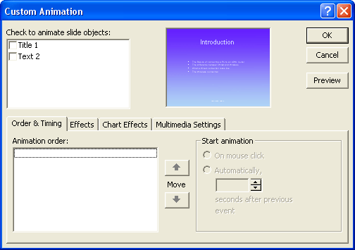

Free
powerpoint
Tutorials
|
Free
powerpoint
Tutorials
|
|
 home home |
Stay at Home and Learn | ||||
Bullet Animation - PowerPoint 2000 |
|||||
|
Part 1, 2, 3, 4, 5, 6, 7, 8, 9, 10, 11
To get the same list as we have on our presentation, do the following.
When you click on Custom Animation, you'll see the following dialogue box:  The Order and Timing tab is not the one we want, so click the Effects tab:
You can animate objects (text boxes, bullets, etc) by ticking the boxes at the top. The one we want to animate is Text 2. Put a tick in this box, and the object will be highlighted in the preview window: When you tick the box, the options below will become available: The first dropdown list, under Entry animation and sound, is the effect itself. The default is Fly. This is the effect we're after. But we don't want From Left. Click the From Left dropdown list to see the alternatives: The one we want is From Top. Select this option. Click the Preview button to see what the chosen effect looks like: When you click Preview, the button text will change to Stop: With the effect we've chosen, you should see each list item drop down from the top. Try the other options on the list. What about "From Bottom-Left"? Or "From Right"? Experiment with effects other than Fly. Chose a different one from the list, and then click the Preview button to see what it looks like. What do you think of the Stretch effect? Is the Spiral effect too showy? Another option on this effect dialogue box is sound. Try a sound from the dropdown list, and then click the Preview button. If you have the sound turned on, you should hear it. What did you think? Would you have sounds for a professional presentation on a bulleted list? We've left them off! Another option is to Introduce the text All at once, Word
by Word, or Letter by letter. Play around with these settings,
and see what they do. When you've finished experimenting, click OK. Another way to see what an animation looks like is via the Animation
window. Click Slide Show from the PowerPoint menu. From the Slide
Show menu, select Animation Preview. You should see the following
window appear: The animation will run once. To see it again in this small window, right click and select Animation Preview. Run your full presentation by pressing F5 on your keyboard. When you get to slide two, you should see your animated bullets in action. They should look like ours. The only thing left to do for this slide is to add some notes. Click
inside the Notes box at the bottom, and type some notes for this slide.
You can use the
same notes as we did.
In the next part, we'll start adding the images.
|
||||